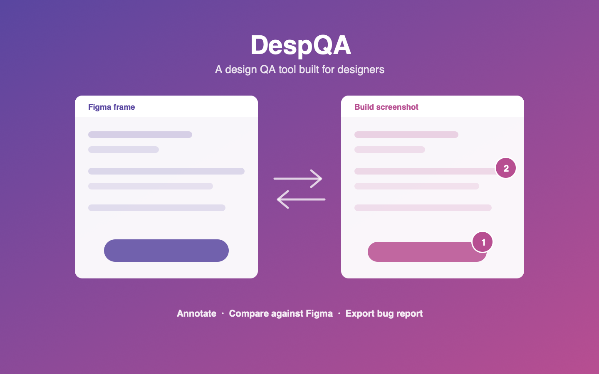

DespQA - A Design QA Tool

Project Brief
Design QA is the step where a designer checks a built screen against the design spec — and it is the step our process never had a proper home for. Designers were jumping between the build on a phone, Figma on a laptop, a screenshot folder, and a spreadsheet of findings, then re-typing everything into JIRA. DespQA is a self-initiated tool I designed and shipped to close that gap: a single workspace where a designer annotates a build screenshot, compares it side by side against the Figma frame, and exports the findings as a bug report.
Target Users
Product designers running QA on mobile builds, and the developers who receive the findings.
My Role
- Problem framing & process research
- Product owner
- Product designer
- Built and shipped the tool
Main Activities
- Mapped the existing design QA workflow to locate the breakpoints
- Designed the session, annotation and comparison flows
- Built the web app and the companion Figma plugin
- Ran it on live sprint QA and iterated on feedback
The Problem
I mapped our end-to-end design process and found that it effectively stopped at handoff. After a design was handed to engineering there was no owned, repeatable step for verifying what actually got built. In practice that meant:
- Tool switching — a single finding touched four different apps before it became a ticket.
- No shared reference — "it doesn't match the design" without the frame beside it is not actionable for a developer.
- Findings evaporated — notes lived in personal screenshots and DMs, so the same defect resurfaced in the next sprint.
- Nothing was measurable — we could not say how many design defects a release carried, so QA never got prioritised.
The Solution
One workspace that holds the whole QA pass, so a finding never has to leave the tool before it becomes a ticket.
- Screenshot annotation — mark up a build screenshot directly in the browser.
- Side-by-side Figma comparison — the design frame sits next to the build, so every finding carries its own evidence.
- Figma plugin — pushes frames straight into a session. No access token, no file permissions, no setup for the designer.
- Sessions — each pass records environment, build version and device, so findings stay traceable to a specific build.
- Shared sessions — a teammate joins an existing session instead of starting a parallel, divergent list.
- Bug report export — findings leave as a structured report, with JIRA ticket population planned next.
Key Design Decisions
No auth token for the designer
The obvious build was a Figma REST integration, which would have made every designer generate and paste an access token. Pushing frames out from a Figma plugin instead removed that step entirely — the difference between a tool people try once and a tool people keep open.
Screenshots before video
I scoped the first release to still screenshots rather than screen recordings. Recording is the richer input, but it carries frame extraction, playback and timestamp binding. Screenshots let me validate the actual workflow first and keep engineering effort proportional to a self-initiated project.
Session as the unit of work
Findings are grouped into a session tied to a build, not filed as loose comments. That is what makes a QA pass reviewable after the fact, and what turns scattered observations into something a team can count and act on.
Outcome
DespQA is live and in use on real sprint QA passes. It gives the design process an owned step after handoff — the gap I originally set out to close — and it makes design defects countable for the first time, which is the groundwork for arguing that design QA deserves sprint time at all.